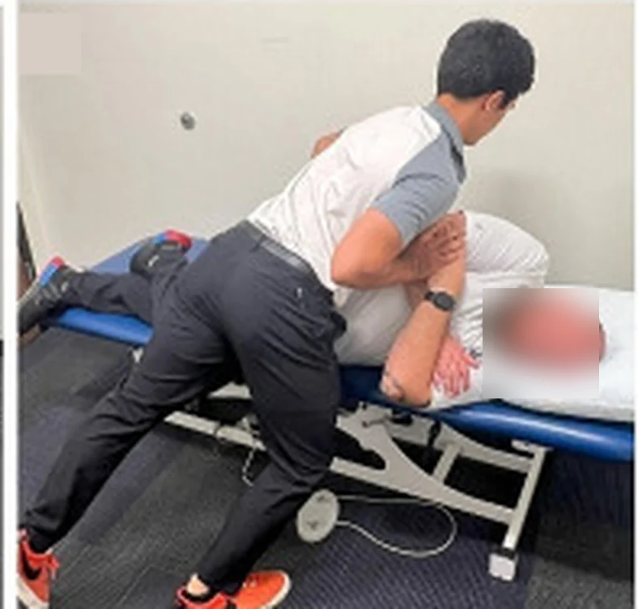

Con terapia manuale si intendono le tecniche eseguite con le mani sulle articolazioni e sui tessuti molli: mobilizzazioni, manipolazioni, massaggio, trattamento dei muscoli e delle fasce.
Riduce il dolore, soprattutto nelle prime settimane. Il punto su cui tutte le sintesi concordano è che il risultato duraturo viene dal movimento e dall'esercizio, e che le mani servono ad arrivarci.

Che cosa comprende
Sotto lo stesso nome stanno manovre diverse fra loro:
- la mobilizzazione, un movimento lento e graduale portato fino al limite dell'articolazione, che la persona può interrompere;
- la manipolazione, una spinta breve e rapida di piccola ampiezza, quella che spesso produce lo schiocco;
- le tecniche sui tessuti molli: massaggio, trattamento dei punti dolenti, lavoro sulle fasce.
Lo schiocco, va detto, non è un indicatore di nulla: non segnala che «qualcosa è tornato a posto» e la sua presenza non è legata al risultato.
Quando si propone, e quanto funziona
Mal di schiena
È l'impiego più studiato. Nel mal di schiena cronico aspecifico la terapia manuale riduce il dolore e la disabilità, con un effetto più evidente a breve termine.[2]
C'è però un dato che conviene conoscere, perché cambia le aspettative: aggiungere la terapia manuale a un programma di esercizi, rispetto al solo esercizio, porta un vantaggio piccolo e di qualità incerta.[3] In altre parole è l'esercizio a fare il grosso del lavoro.
Collo e mal di testa
Nel dolore cervicale le tecniche manuali danno beneficio, in particolare quando si tratta anche il tratto dorsale e non solo il collo. Risultati favorevoli sono riportati anche nella cefalea cervicogenica e nella profilassi dell'emicrania.[1]
Dove le prove non bastano
Per la sola manipolazione cervicale nel dolore al collo, per il dolore dorsale medio, per la sciatica, la cefalea di tipo tensivo, i disturbi dell'articolazione della mandibola e la fibromialgia, i risultati sono inconcludenti.[1]
Com'è la seduta
Dopo la valutazione, il terapista esegue le manovre sul segmento interessato, in genere alternando tecniche diverse. Una seduta dura fra venti e quaranta minuti.
La mobilizzazione è indolore o quasi; la manipolazione è rapida e può sorprendere, ma non deve far male. Una manovra non va mai eseguita forzando contro il dolore: se fa male, va detto.
Il trattamento è quasi sempre accompagnato da esercizi da eseguire a casa, e il ciclo va definito all'inizio con un numero di sedute e un momento di verifica.
Fai
- Riferisci subito se una manovra provoca dolore acuto, vertigine o nausea.
- Esegui gli esercizi assegnati fra una seduta e l'altra.
- Riprendi l'attività normale: il movimento è parte del trattamento.
- Metti in conto un indolenzimento di un giorno o due dopo la seduta.
Non fare
- Non proseguire per mesi con sedute che danno sollievo solo per qualche ora.
- Non farti manipolare il collo senza che qualcuno abbia prima valutato la tua situazione.
- Non rinviare l'esercizio aspettando di «essere a posto»: è il contrario.
Quando non si fa
- Fratture, traumi recenti, osteoporosi grave nel segmento da trattare.
- Infezioni, tumori o metastasi ossee.
- Segni di allarme non ancora chiariti: perdita di forza, disturbi della sensibilità in espansione, problemi di controllo di vescica o intestino, febbre e perdita di peso inspiegata.
- Instabilità della colonna.
In presenza di segnali di allarme serve prima un inquadramento diagnostico, non una manovra.[1] Richiedono cautela particolare la terapia anticoagulante, le malattie del tessuto connettivo e, per il collo, i disturbi vascolari noti.
Effetti indesiderati
Gli effetti lievi sono frequenti e previsti: indolenzimento, rigidità, stanchezza, occasionalmente mal di testa nelle ore successive. Passano entro un paio di giorni.
Gli eventi gravi sono rari. L'esame sistematico della letteratura sulla sicurezza delle manipolazioni della colonna si è però concluso con un'ammissione che vale la pena riportare: i dati disponibili non permettono di calcolarne la frequenza reale, e le conclusioni rassicuranti si trovano più spesso nelle revisioni metodologicamente più deboli.[4]
Significa che il rischio è basso ma non quantificato con precisione, e che la selezione di chi viene trattato conta più di qualunque statistica generale.
Cosa è utile sapere prima
Chi esegue il trattamento deve essere un professionista sanitario abilitato. In Italia significa medico, fisioterapista o altra professione sanitaria nell'ambito delle proprie competenze.
Il sollievo immediato non è una guarigione. Una seduta che toglie il dolore per qualche ora è un'informazione utile, non un risultato: indica che si può lavorare su quel segmento, non che il problema è risolto.
Un ciclo deve avere una fine. Se dopo le sedute concordate il quadro è uguale, la risposta non è aggiungerne altre: è rivedere la diagnosi.
Da dove vengono queste informazioni
- Bronfort G, Haas M, Evans R, Leininger B, Triano J. Effectiveness of manual therapies: the UK evidence report. Chiropractic & Osteopathy 2010;18:3. doi:10.1186/1746-1340-18-3
- Conde-Vázquez O, García-Cancela J, Navarro-Ledesma S, et al. The effectiveness of manual therapy in people with chronic non-specific low back pain: an umbrella review with meta-analysis. Annals of Physical and Rehabilitation Medicine 2026;69(2):102049. doi:10.1016/j.rehab.2025.102049
- Dos Santos ECS, Dos Santos AT, da Silva NA, et al. Effectiveness of adding manual therapy to exercise for pain and disability in chronic non-specific low back pain: a systematic review and meta-analysis. Musculoskeletal Science and Practice 2026;82:103508. doi:10.1016/j.msksp.2026.103508
- Nielsen SM, Tarp S, Christensen R, et al. The risk associated with spinal manipulation: an overview of reviews. Systematic Reviews 2017;6(1):64. doi:10.1186/s13643-017-0458-y
Scheda aggiornata il 16 novembre 2026. Prossima revisione prevista entro novembre 2028.
Per quali disturbi
Le schede dei disturbi per cui questo trattamento viene preso in considerazione, con quello che dicono le linee guida.
- Cefalea cervicogenica
- Cervicobrachialgia
- Colpo di frusta
- Conflitto subacromiale
- Dolore al collo (cervicalgia)
- Dorsalgia (dolore dorsale)
- Epicondilite laterale (gomito del tennista)
- Fascite plantare e sperone calcaneare
- Mal di schiena (lombalgia)
- Rizoartrosi (artrosi della base del pollice)
- Sciatica
- Sindrome della bandelletta ileotibiale
- Spalla congelata (capsulite adesiva)
- Spondilosi e artrosi della colonna
- Tendinopatia del capo lungo del bicipite
- Tendinopatia della cuffia dei rotatori
Cerca un'altra scheda
Un disturbo, un trattamento, o anche solo il punto che fa male: «formicolio», «tallone», «spalla congelata».